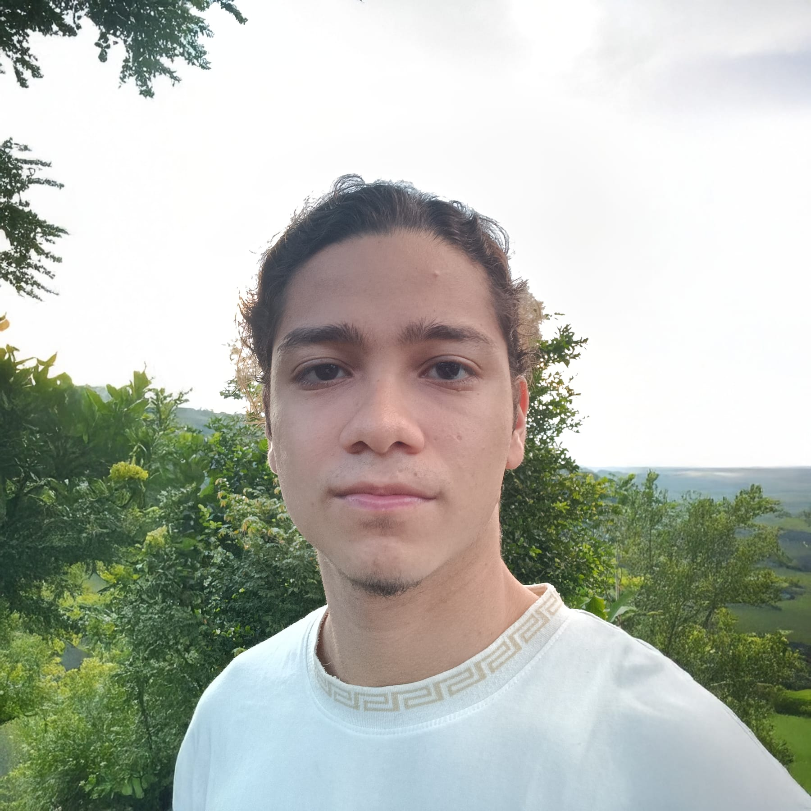

galacticBills
Send a photo or PDF of an invoice over a messaging channel. An LLM extracts the tax fields, validates the totals and files them. No manual data entry.
AI automation engineer
I design, deploy and operate AI automation on my own infrastructure. Then I keep it running.

Built, deployed and operated by me. No one watching them overnight.
Send a photo or PDF of an invoice over a messaging channel. An LLM extracts the tax fields, validates the totals and files them. No manual data entry.
Generates short video and carousels, publishes them and measures what worked.
QA and fixes for a dispatch platform in production in Colombia. Every issue filed with its cause, its fix and how to verify it.
A multi-product sales engine over an official WhatsApp BSP. Conversational AI, voice transcription, payment-receipt validation and follow-up windows.
Curates AI news, drafts the post, waits for my approval on Telegram.
Renders vertical videos from a database with Remotion and headless Chrome.
How much money will I have on a given date. Pure Dart domain.
A system you have in mind, delivered and documented, ready to run without me.
Ongoing capacity for automation already in production, including the maintenance nobody has time for.
I join your team for a sprint or a quarter, inside your repo, board and review flow.
Evidence-backed findings on what breaks silently and what won’t survive a second client.
No public rates. You get a number in my first reply.
Most of what I build starts as a pilot and becomes a platform. Knowing what not to make configurable is the part nobody can improvise.
Bots handling conversations over an official WhatsApp provider, pipelines publishing on a schedule, workflows filing invoices every day.
Slack, Notion, pull requests and written documentation. UTC-5 overlaps the entire US working day.
AWS EC2 behind nginx, Docker and self-hosted n8n. I don’t need anyone else to deploy what I build.
The self-hosted n8n on AWS EC2 the whole team runs on, provisioned with Terraform and reached through SSM.
Digital products for clients in Latin America and Spain.
Identities and motion graphics. Where my design judgement comes from.
Tell me what you need running. I reply in writing, with questions, a rough plan and a number.